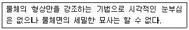
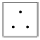
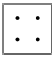
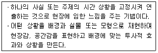
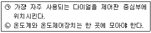
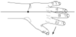
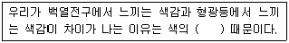
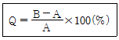

실내건축산업기사 (2016-05-08 기출문제)
1과목: 실내디자인론
1. 실내기본요소 중 바닥에 관한 설명으로 옳지 않은 것은?
- 공간을 구성하는 수평적 요소이다.
- 촉각적으로 만족할 수 있는 조건을 요구한다.
- 고저차를 통해 공간의 영역을 조정할 수 있다.
- 다른 요소들에 비해 시대와 양식에 의한 변화가 현저하다.
(정답률: 82%)

2. 가구배치계획에 관한 설명으로 옳지 않은 것은?
- 평면도에 계획되며 입면계획을 고려하지 않는다.
- 실의 사용목적과 행위에 적합한 가구배치를 한다.
- 가구 사용시 불편하지 않도록 충분한 여유 공간을 두도록 한다.
- 가구의 크기 및 형상은 전체공간의 스케일과 시각적, 심리적 균형을 이루도록 한다.
(정답률: 91%)
3. 실내디자이너의 역할과 작업에 관한 설명으로 옳지 않은 것은?
- 건축 및 환경과의 상호성을 고려하여 계획하여야 한다.
- 인간의 활동을 도와주며, 동시에 미적인 만족을 주는 환경을 창조한다.
- 효율적인 공간창출을 위하여 제반요소에 대한 분석작업이 우선되어야 한다.
- 실내디자이너의 작업은 이용자 특성에 대한 제약을 벗어나 공간예술 창조의 자유가 보장 되어야 한다.
(정답률: 90%)
4. 디자인의 원리 중 대비에 관한 설명으로 옳지 않은 것은?
- 극적인 분위기를 연출하는데 효과적이다.
- 상반 요소가 밀접하게 접근하면 할수록 대비의 효과는 감소된다.
- 강력하고 화려하며 남성적인 이미지를 주지만 지나치게 크거나 많은 대비의 사용은 통일성을 방해할 우려가 있다.
- 질적, 양적으로 전혀 다른 둘 이상의 요소가 동시에 혹은 계속적으로 배열될 때 상호의 특질이 한층 강하게 느껴지는 통일적 현상이다.
(정답률: 68%)
5. 알바 알토가 디자인한 의자로 자작나무 합판을 성형하여 만들었으며, 목재가 지닌 재료의 단순성을 최대한 살린 것은?
- 바실리 의자
- 파이미오 의자
- 레드 블루 의자
- 바르셀로나 의자
(정답률: 56%)
6. 다음 중 전시공간의 규모 설정에 영향을 주는 요인과 가장 거리가 먼 것은?
- 전시방법
- 전시의 목적
- 전시공간의 평면형태
- 전시자료의 크기와 수량
(정답률: 62%)
7. 비주얼 머천다이징(VMD)에 관한 설명으로 옳지 않은 것은?
- VMD의 구성은 IP, PP, VP 등이 포함된다.
- VMD의 구성 중 IP는 상점의 이미지와 패션테마의 종합적인 표현을 일컫는다.
- 상품계획, 상점계획, 판촉 등을 시각화시켜 상점이미지를 고객에게 인식시키는 판매전략을 말한다.
- VMD란 상품과 고객 사이에서 치밀하게 계획된 정보전달 수단으로서 디스플레이의 기법 중 하나이다.
(정답률: 69%)
8. 수평 블라인드로 날개의 각도, 승강으로 일광, 조망, 시각의 차단 정도를 조절할 수 있는 것은?
- 롤 블라인드
- 로만 블라인드
- 베니션 블라인드
- 버티컬 블라인드
(정답률: 67%)
9. 어떤 공간에 규칙성의 흐름을 주어 경쾌하고 활기 있는 표정을 주고자 한다. 다음의 디자인 원리 중 가장 관계가 깊은 것은?
- 조화
- 리듬
- 강조
- 통일
(정답률: 83%)
10. 다음과 같은 특징을 갖는 조명의 연출기법은?

- 스파클 기법
- 실루엣 기법
- 윌위싱 기법
- 그레이징 기법
(정답률: 88%)
11. 사무소 건축의 오피스 랜드스케이핑(Office Landscaping)에 관한 설명으로 옳지 않은 것은?
- 공간을 절약할 수 있다.
- 개방식 배치의 한 형식이다.
- 조경 면적 확대를 목적으로 하는 친환경 디자인 기법이다.
- 커뮤니케이션의 융통성이 있고, 장애요인이 거의 없다.
(정답률: 68%)
12. 역리도형 착시의 사례로 가장 알맞은 것은?
- 헤링 도형
- 자스트로의 도형
- 펜로즈의 삼각형
- 쾨니히의 목걸이
(정답률: 74%)
13. 더블 베드(double bed)의 크기로 알맞은 것은?
- 1,000×2,000mm
- 1,350×2,000mm
- 1,500×2,000mm
- 2,000×2,000mm
(정답률: 76%)
14. 상점의 판매형식 중 대면판매에 관한 설명으로 옳지 않은 것은?
- 종업원의 정위치를 정하기 어렵다.
- 포장대나 캐시대를 별도로 둘 필요가 없다.
- 고객과 마주 대하기 때문에 상품 설명이 용이하다.
- 소형 고가품인 귀금속, 카메라 등의 판매에 적합하다.
(정답률: 71%)
15. 가장 완전한 균형의 상태로 공간에 질서를 주기 용이한 디자인 원리는?
- 대칭적 균형
- 능동의 균형
- 비정형 균형
- 비대칭 균형
(정답률: 87%)
16. 다음 중 집중효과가 가장 큰 것은?


(정답률: 91%)
17. 주거공간을 주 행동에 의해 구분할 경우, 다음 중 사회공간에 속하지 않는 것은?
- 거실
- 식당
- 서재
- 응접실
(정답률: 88%)
18. 다음 설명에 알맞은 특수전시기법은?

- 디오라마전시
- 파노라마전시
- 아일랜드전시
- 하모니카전시
(정답률: 73%)
19. 부엌 작업대의 배치유형 중 일렬형에 관한 설명으로 옳지 않은 것은?
- 작업대를 벽면에 한 줄로 붙여 배치하는 유형이다.
- 작업대 전체의 길이는 4000~5000mm 정도가 가장 적당하다.
- 부엌의 폭이 좁거나 공간의 여유가 없는 소규모 주택에 적합하다.
- 작업대가 길어지면, 작업 동선이 길게 되어 비효율적이 된다.
(정답률: 76%)
20. 형태의 분류 중 인간의 지각, 즉 시각과 촉각으로는 직접 느낄 수 없고 개념적으로만 제시될 수 있는 형태로서 순수 형태라고도 하는 것은?
- 인위적 형태
- 현실적 형태
- 이념적 형태
- 직설적 형태
(정답률: 89%)
2과목: 색채 및 인간공학
21. 대비효과를 크게 하기 위해 색광을 이용하는 조명방법은?
- 색채조명
- 투과조명
- 방향조명
- 근자외선조명
(정답률: 83%)
22. 음량에 관한 척도 중 어떤 음을 phon 값으로 표시한 음량 수준은 이 음과 같은 크기로 들리는 몇 Hz 순음의 음압 수준(dB)인가?
- 10
- 100
- 500
- 1,000
(정답률: 59%)
23. 다음은 부품배치의 원리에 관한 내용이다. 각각의 번호와 해당하는 원리가 맞게 짝지어진 것은?

- ㉠ 사용빈도의 원리, ㉡ 기능성의 원리
- ㉠ 사용빈도의 원리, ㉡ 중요도의 원리
- ㉠ 중요도의 원리, ㉡ 사용순서의 원리
- ㉠ 기능성의 원리, ㉡ 사용순서의 원리
(정답률: 80%)
24. 공장에서 작업자가 팔을 계속적으로 뻗어 기계의 부속품을 조립할 경우, 근육의 고정된 긴장 때문에 피로해지고 기술도 감소되므로 작업자가 자기 팔꿈치를 되도록 몸에 끌어당겨서 일할 수 있도록 기계가 설계되어야 한다. 이 때 상완과 하완 사이의 각도가 몇 도가 되도록 끌어당기는 것이 적합한가?
- 45°
- 60°
- 90°
- 120°
(정답률: 49%)
25. ON-OFF 스위치 혹은 증, 감에 대한 기본적 원리 중적절치 않는 것은?
- ON이나 증은 윗 방향으로 OFF나 감은 아랫방향으로
- ON이나 증은 전방으로 OFF나 감은 후방으로
- ON이나 증은 좌측으로 OFF나 감은 우측으로
- 경사패널에 장치된 조작구에는 상하, 전후, 조작의 명확한 구별이 없음
(정답률: 58%)
26. 소음성 난청이 가장 잘 발생할 수 있는 주파수의 범위로 맞는 것은?
- 1,000~2,000Hz
- 10,000~12,000Hz
- 3,000~5,000Hz
- 13,000~15,000Hz
(정답률: 57%)
27. 인간 –기계의 통합체계 중 반자동 체계를 무엇이라 하는가?
- 수동 체계
- 기계화 체계
- 정보 체계
- 인력이용 체계
(정답률: 63%)
28. 피로의 측정분류와 측정대상항목이 맞게 연결된 것은?
- 순환기능검사 : 뇌파
- 감각기능검사 : 안구운동
- 자율신경기능 : 반응시간
- 생화학적 측정 : 에너지대사
(정답률: 49%)
29. 인간의 오류를 줄이는 가장 적극적인 방법은?
- 오류경로제어(path control)
- 오류근원제어(source control)
- 수용기제어(receiver control)
- 작업조건의 법제화(legislative system)
(정답률: 75%)
30. 다음 손의 그림과 같이 손바닥 방향으로 꺾이는 관절 운동은?

- 배굴
- 외향
- 내향
- 굴곡
(정답률: 56%)
31. 상품의 색채기획단계에서 고려해야 할 사항으로 옳은 것은?
- 가공, 재료 특성보다는 시장성과 심미성을 고려해야 한다.
- 재현성에 얽매이지 말고 색상관리를 해야 한다.
- 유사제품과 연계제품의 색채와의 관계성은 기획단계에서 고려되지 않는다.
- 색료를 선택할 때 내광, 내후성을 고려해야 한다.
(정답률: 73%)
32. 색의 온도감을 좌우하는 가장 큰 요소는?
- 색상
- 명도
- 채도
- 면적
(정답률: 55%)
33. 다음 중 ( )의 내용으로 옳은 것은?

- 순응성
- 연색성
- 항상성
- 고유성
(정답률: 70%)
34. 두 가지 이상의 색을 목적에 알맞게 조화되도록 만드는 것은?
- 배색
- 대비조화
- 유사조화
- 대응색
(정답률: 70%)
35. 다음 중 나팔꽃, 신비, 우아함을 연상시키는 색은?
- 청록
- 노랑
- 보라
- 회색
(정답률: 86%)
36. 비렌의 색채조화 원리에서 가장 단순한 조화이면서 일반적인 깨끗하고 신선해 보이는 조화는?
- COLOR –SHADE - BLACK
- TINT –TONE - SHADE
- COLOR –TINT - WHITE
- WHITE –GRAY –BLACK
(정답률: 74%)
37. 한국의 전통색의 상징에 대한 설명으로 옳은 것은?
- 적색 – 남쪽
- 백색 - 중앙
- 황색 – 동쪽
- 청색 – 북쪽
(정답률: 56%)
38. 다음 색상 중 무채색이 아닌 것은?
- 연두색
- 흰색
- 회색
- 검정색
(정답률: 87%)
39. 오스트발트의 등색상 삼각형에서 흰색(W)에서 순색(C) 방향과 평행한 색상의 계열은?
- 등순색계열
- 등흑색계열
- 등백색계열
- 등가색계열
(정답률: 51%)
40. 먼셀(Munsell) 색상환에서 GY는 어느 색인가?
- 자주
- 연두
- 노랑
- 하늘색
(정답률: 82%)
3과목: 건축재료
41. 다음 재료 중 비강도(比强度)가 가장 큰 것은?
- 소나무
- 탄소강
- 콘크리트
- 화강암
(정답률: 61%)
42. 합판(plywood)의 특성이 아닌 것은?
- 순수 목재에 비하여 수축팽창율이 크다.
- 비교적 좋은 무늬를 얻을 수 있다.
- 필요한 소정의 두께를 얻을 수 있다.
- 목재의 결점을 배제한 양질의 재를 얻을 수 있다.
(정답률: 65%)
43. 트럭믹서에 재료만 공급받아서 현장으로 가는 도중에 혼합하여 사용하는 콘크리트는?
- 센트럴 믹스트 콘크리트
- 슈링크 믹스트 콘크리트
- 트랜싯 믹스트 콘크리트
- 배쳐플랜트 콘크리트
(정답률: 59%)
44. KS F 2503(굵은 골재의 밀도 및 흡수율 시험방법)에 따른 흡수율 산정식은 다음과 같다. 여기서 A가 의미하는 것은?

- 절대건조상태 시료의 질량(g)
- 표면건조포화상태 시료의 질량(g)
- 시료의 수중질량(g)
- 기건상태시료의 질량(g)
(정답률: 57%)
45. 각 시멘트의 성질에 관한 설명으로 옳지 않은 것은?
- 조강포틀랜드시멘트는 발열량이 높아 저온에서도 강도발현이 가능하다.
- 플라이애쉬시멘트는 메스 콘크리트공사, 항만공사 등에 적용된다.
- 실리카흄 시멘트를 사용한 콘크리트는 강도 및 내구성이 뛰어나다.
- 고로시멘트를 사용한 콘크리트는 해수에 대한 내식성이 좋지 않다.
(정답률: 65%)
46. 목재의 함수율에 관한 설명으로 옳지 않은 것은?
- 함수율 30% 이상에서는 함수율 증감에 따른 강도의 변화가 거의 없다.
- 기건상태인 목재의 함수율은 15% 정도이다.
- 목재의 진비중은 일반적으로 2.54 정도이다.
- 목재의 함수율 30% 정도를 섬유포화점이라 한다.
(정답률: 63%)
47. 다음 중 방청도료에 해당되지 않는 것은?
- 광명단
- 알루미늄도료
- 징크로메이트
- 오일스테인
(정답률: 52%)
48. 철근 콘크리트 바닥판 밑에 반자틀이 계획되어 있음에도 불구하고 실수로 인하여 인서트(insert)를 설치하지 않았다고 할 때 인서트의 효과를 낼 수 있는 철물의 설치방법으로 옳지 않은 것은?
- 익스팬션 볼트(expansion bolt) 설치
- 스크루 앵커(screw anchor) 설치
- 드라이브 핀(drive pin) 설치
- 개스킷(gasket) 설치
(정답률: 60%)
49. 원목을 일정한 길이로 절단하여 이것을 회전시키면서 연속적으로 얇게 벗긴 것으로 원목의 낭비를 막을 수 있는 합판 제조법은?
- 슬라이스드 베니어
- 소드 베니어
- 로터리 베니어
- 반원 슬라이스드 베니어
(정답률: 62%)
50. 바람벽이 바탕에서 떨어지는 것을 방지하는 역할을 하는 것으로서 충분히 건조되고 질긴 삼, 어저귀, 종려털 또는 마닐라 삼을 사용하는 재료는?
- 라프코트(rough coat)
- 수염
- 리신바름(lithin coat)
- 테라조바름
(정답률: 48%)
51. 화산석으로 된 진주석을 900~1200℃의 고열로 팽창시켜 만들며, 주로 단열, 보온, 흡음 등의 목적으로 사용되는 재료는?
- 트래버틴(Travertine)
- 펄라이트(Pearlite)
- 테라조(Terrazzo)
- 석면(Asbestos)
(정답률: 66%)
52. 다음 중 외장용으로 가장 부적합한 석재는?
- 화강암
- 안산암
- 대리석
- 점판암
(정답률: 77%)
53. 각 벽돌에 관한 설명 중 옳은 것은?
- 과소벽들은 질이 견고하고 흡수율이 낮아 구조용으로 적당하다.
- 건축용 내화벽돌의 내화도는 500~600℃의 범위이다.
- 중공벽돌은 방음벽, 단열벽 등에 사용된다.
- 포도벽돌은 주로 건물 외벽의 치장용으로 사용된다.
(정답률: 42%)
54. 프탈산과 글리세린수지를 변성시킨 포화폴리에스테르수지로 내후성, 접착성이 우수하며 도료나 접착제 등으로 사용되는 합성수지는?
- 알키드수지
- A.B.S수지
- 스티롤수지
- 에폭시수지
(정답률: 44%)
55. 강의 일반적 성질에 관한 설명으로 옳지 않은 것은?
- 탄소함유량이 증가할수록 강도는 증가한다.
- 탄소함유량이 증가할수록 비열ㆍ전기저항이 커진다.
- 탄소함유량이 증가할수록 비중ㆍ열전도율이 올라간다.
- 탄소함유량이 증가할수록 연신율ㆍ열팽창계수가 떨어진다.
(정답률: 46%)
56. 다음 중 수경성 미장재료가 아닌 것은?
- 시멘트모르타르
- 돌로마이트 플라스터
- 인조석 바름
- 석고 플라스터
(정답률: 64%)
57. 목재의 자연건조 시 유의할 점으로 옳지 않은 것은?
- 지면에서 20cm 이상 높이의 굄목을 놓고 쌓는다.
- 잔적(piling) 내 공기순환 통로를 확보해야한다.
- 외기의 온ㆍ습도의 영향을 많이 받을 수 있으므로 세심한 주의가 필요하다.
- 건조기간의 단축을 위하여 마구리 부분을 일광에 노출시킨다.
(정답률: 76%)
58. 미장재료에 여물을 사용하는 가장 주된 이유는?
- 유성페인트로 착색하기 위해서
- 균열을 방지하기 위해서
- 점성을 높여주기 위해서
- 표면의 경도를 높여주기 위해서
(정답률: 71%)
59. 시멘트와 그 용도와의 관계를 나타낸 것으로 옳지 않은 것은?
- 조강포틀랜드시멘트 - 한중공사
- 중용열포틀랜드시멘트 - 댐공사
- 백색포틀랜드시멘트 – 타일 줄눈공사
- 고로슬래그시멘트 – 마감용 착색공사
(정답률: 66%)
60. 콘크리트 타설 중 발생되는 재료분리에 대한 대책으로 가장 알맞은 것은?
- 굵은골재의 최대치수를 크게 한다.
- 바이브레이터로 최대한 진동을 가한다.
- 단위수량을 크게 한다.
- AE제나 플라이애시 등을 사용한다.
(정답률: 70%)
4과목: 건축일반
61. 화재예방, 소방시설설치ㆍ유지 및 안전관리에 관한 법률 제7조(건축허가등의 동의)에 근거하여 건축물의 사용승인 시 소방본부장 또는 소방서장이 사용승인에 동의를 갈음할 수 있는 방식으로 옳은 것은?
- 건축물 관리대장 확인
- 건축물의 사용승인확인서에 날인
- 소방시설공사의 사용승인신청서 교부
- 소방시설공사의 완공검사증명서 교부
(정답률: 57%)
62. 철골구조의 접합에서 두 부재의 두께가 다를 때 같은 두께가 되도록 끼워 넣는 부재는?
- 거셋 플레이트(gusset plate)
- 필러 플레이트(filler plate)
- 커버 플레이트(cover plate)
- 베이스 플레이트(base plate)
(정답률: 63%)
63. 거실 용도에 따른 조도기준은 바닥에서 몇 cm의 수평면 조도를 말하는가?
- 50cm
- 65cm
- 75cm
- 85cm
(정답률: 49%)
64. 기초의 부동침하 원인과 가장 관계가 먼 것은?
- 한 건물에 기능상 다른 기초를 병용하였을 때
- 건물의 길이가 길지 않을 때
- 하부층의 지반에 연약지반이 존재할 때
- 지하수위가 변경되었을 때
(정답률: 77%)
65. 소방시설 중 피난설비에 해당되지 않는 것은?
- 유도등
- 비상방송설비
- 비상조명등
- 인명구조기구
(정답률: 59%)
66. 소방시설 등의 자체점검 중 종합정밀점검 대상에 해당하지 않는 것은?
- 스프링클러설비가 설치된 연면적 5,000m2인 특정소방대상물
- 물분무등소화설비가 설치된 연면적 3,000m2인 특정소방대상물
- 제연설비가 설치된 터널
- 연면적 5,000m2이고 층수가 16층인 아파트
(정답률: 38%)
67. 개별 관람석의 바닥면적이 600m2 인 공연장의 관람석 출구의 유효너비 합계는 최소 얼마 이상인가?
- 3m
- 3.6m
- 4m
- 4.6m
(정답률: 55%)
68. 다음 중 평보에 가장 적합한 이음은?
- 맞댄이음
- 겹친이음
- 홈이음
- 빗걸이 이음
(정답률: 64%)
69. 건축물의 피난층 외의 층에서 피난층 또는 지상으로 통하는 직통계단을 설치할 때 거실의 각 부분으로부터 직통계단에 이르는 최대 보행거리 기준은? (단, 주요구조부가 대화구조 또는 불연재료로 구성, 16층 이상의 공동주택은 제외)
- 30m 이하
- 40m 이하
- 50m 이하
- 60m 이하
(정답률: 38%)
70. 벽돌 쌓기법 중 프랑스식 쌓기에 대한 설명으로 옳은 것은?
- 한 켜에서 길이쌓기와 마구리쌓기가 번갈아 나타난다.
- 한 켜는 길이쌓기, 다음 켜는 마구리쌓기가 반복된다.
- 5켜는 길이쌓기, 다음 1켜는 마구리쌓기로 반복된다.
- 반장 두께로 장식적으로 구멍을 내어가며 쌓는다.
(정답률: 59%)
71. 건축물의 방화구획 설치기준을 옳지 않은 것은?
- 5층 이하의 층은 층마다 구획할 것
- 10층 이하의 층은 바닥면적 1,000m2 이내마다 구획할 것 (단, 자동식 소화설비 미설치의 경우)
- 지하층은 층마다 구획할 것
- 11층 이상의 층은 바닥면적 200m2 이내마다 구획할 것 (단, 자동식 소화설비 미설치의 경우)
(정답률: 44%)
72. 특정소방대상물에서 사용하는 방염대상물품에 해당되지 않는 것은?
- 창문에 설치하는 커튼류
- 종이벽지
- 전시용 섬유관
- 섬유류 또는 합성수지류 등을 원료로 하여 제작된 소파
(정답률: 79%)
73. 벽돌구조에서 벽면이 고르지 않을 때 사용하고 평줄눈, 빗줄눈에 대해 대조적인 형태로 비슷한 질감을 연출하는 효과를 주는 줄눈의 형태는?
- 오목줄눈
- 볼록줄눈
- 내민줄눈
- 민줄눈
(정답률: 52%)
74. 문화 및 집회시설, 운동시설, 관광 휴게시설로서 자동화재 탐지설비를 설치하여야 할 특정소방대상물의 연면적 기준은?
- 1,000m2 이상
- 1,500m2 이상
- 2,000m2 이상
- 2,300m2 이상
(정답률: 58%)
75. 다음중 르꼬르뷔제와 가장 관계가 먼 것은?
- 도미노 시스템
- 자유로운 파사드
- 옥상 정원
- 유기적 건축
(정답률: 53%)
76. 고대의 한국건축에서 가장 중요하게 영향을 준 요소는?
- 자연조건
- 사회조직
- 경제제도
- 정치제도
(정답률: 74%)
77. 철근콘크리트 구조에 관한 설명 중 옳지 않은 것은?
- 형태를 자유롭게 구성할 수 있다.
- 지하 및 수중 구축을 할 수 있다.
- 자체 중량이 크고 시공의 정밀도를 높이기 위한 노력이 필요하다.
- 내진, 내풍적이나 내화성이 부족하다.
(정답률: 65%)
78. 건축물의 출입구에 설치하는 회전문은 계단이나 에스컬레이터로부터 최소 얼마 이상의 거리를 두어야 하는 가?
- 2m 이상
- 3m 이상
- 4m 이상
- 5m 이상
(정답률: 57%)
79. 다음 중 두께에 관계없이 방화구조에 해당하는 것은?
- 시멘트 모르타르 위에 타일 붙임
- 철망 모르타르
- 심벽에 흙으로 맞벽치기 한 것
- 석고판 위에 희반죽을 바른 것
(정답률: 62%)
80. 주택의 거실에 채광을 위하여 설치하는 창문 등의 면적은 거실 바닥면적의 얼마 이상이어야 하는가?
- 1/2
- 1/5
- 1/10
- 1/20
(정답률: 79%)